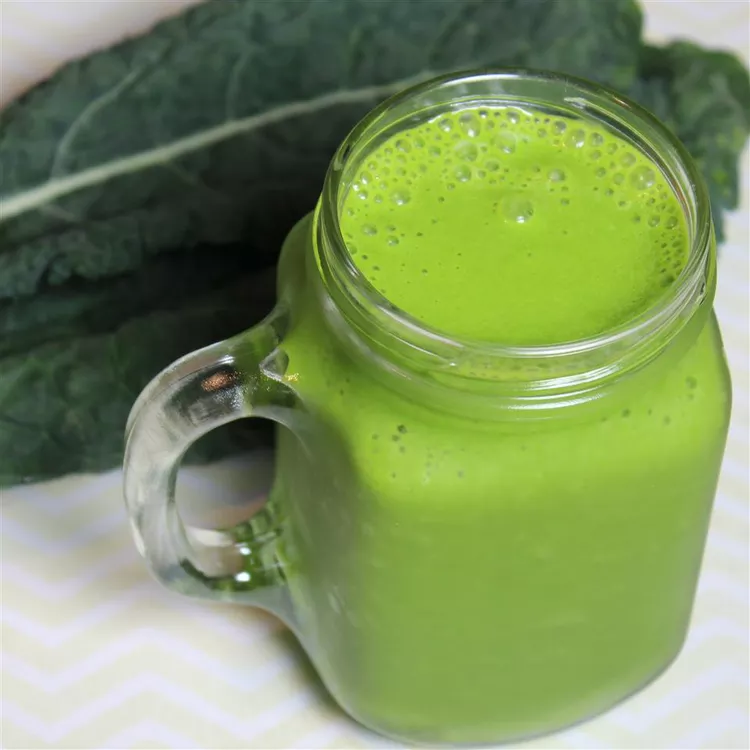

Spinach and Kale Smoothie

Description
This versatile kale and spinach smoothie is a delicious way to
add more veggies to your diet! Chia seeds are optional but will
give you added protein and energy.
Ingridients
- Two cup fresh spinach
- One cup almond milk
- one leaf kale
- One tablespoon peanut butter
- One tablespoon chia seeds(Optional)
- One sliced froyen banana
Steps
-
Combine spinach, almond milk, kale, peanut butter,
and chia seeds in a blender
-
blend until smooth
-
Add banana and blend until smooth
-
Enjoy!